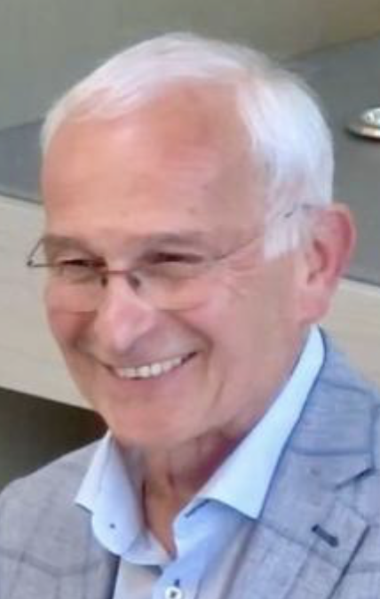

Prof. Dr. Werner Brandeis
Meine Tätigkeit am Deutschen Krebsforschungszentrum (DKFZ) machte mir Freude. Dennoch merkte ich recht bald, dass die alleinige Forschung mich nicht erfüllte. Die Kombination aus Wissenschaft und deren Anwendung in einer klinischen Umgebung erschien mir als der Weg, den ich gehen wollte. Es kamen aber zwei zusätzliche Überlegungen hinzu. Zum einen wurde mir bewusst, dass ich mich unbewusst in San Francisco und Heidelberg immer mit Tumoren des Kindesalters beschäftigt hatte. Ganz einfach, weil sie viel besser mit Blutgefäßen versorgt waren - also aktive Angiogenese betrieben - oder weil sie das N-Myc-Gen überexprimierten. Und zum Anderen befand sich die Universitätskinderklinik mit ihrer Sektion Hämatologie / Onkologie direkt gegenüber vom DKFZ. So wurde mir klar, dass mich mein Weg in die pädiatrische Onkologie führen sollte.
Ich kannte aber niemanden, der Pädiater war und schon garniemanden, der in der pädiatrischen Onkologie tätig war. Also ging ich eines Tages völlig ahnungslos und blauäugig in die Kinderklinik zu Prof. Werner Brandeis, dem damaligen Leizer der Sektion Hämatologie / Onkologie. Ich klopfte an, stellte mich vor und fragte ihn:„Haben Sie vielleicht eine Stelle für mich?“
Brandeis sah mich etwas ungläubig an. Ich hatte mit einer höflichen Absage gerechnet oder mit dem Hinweis, ich solle Unterlagen schicken. Stattdessen fragte er:
„Woher wissen Sie?“
Ich verstand überhaupt nichts und wusste von gar nichts. Also sagte ich genau das:
„Ich weiß von gar nichts. Ich wollte einfach nur mal fragen.“
Damit war die Situation plötzlich eine andere. Ich hatte zufällig an die richtige Tür geklopft, und zwar zum richtigen Zeitpunkt. Werner Brandeis hatte bei der Deutschen Krebshilfe eine Arztstelle eingeworben. Diese Stelle war dafür gedacht, die Betreuung krebskranker Kinder klinisch und wissenschaftlich zu verbessern. Das passte perfekt zu mir. Und ehe ich mich versah, hatte ich die Stelle.
Solche Zufälle klingen im Rückblick fast zu irre, um wahr zu sein. Aber es war so. Ich hatte keine Beziehung genutzt, keine Information abgegriffen und keine strategische Karriereplanung betrieben. Ich hatte nur gefragt. Es erinnerte mich etwas an die Situation, als ich meinen Studienplatz in Medizin per Losentscheid gewonnen hatte.
Werner Brandeis war, wie ich erst später begriff, eine besondere Persönlichkeit der deutschen Kinderonkologie. Er war selbst wissenschaftlich ausgewiesen, hatte am Memorial Sloan Kettering Cancer Center in New York gearbeitet und sich unter anderem mit Neuroblastomen beschäftigt. Das war ausgerechnet der Tumor, mit dem ich mich im DKFZ beschäftigte. Bei unserem ersten Gespräch wusste ich das alles nicht. Ich saß nicht vor ihm mit ehrfürchtigem Wissen über seinen Lebenslauf. Ich saß vor ihm als junger Arzt und Wissenschaftler, der eine Stelle suchte und die Spielregeln dieser Szene übethaupt nicht kannte.
Dass Brandeis diese Stelle bei der Deutschen Krebshilfe eingeworben hatte, sagt viel über ihn. Er wollte offenbar nicht nur eine Station verwalten, sondern die Versorgung der Kinder mit Krebs verbessern und klinische Arbeit mit wissenschaftlichem Denken verbinden. Insofern war diese Stelle für mich nicht nur eine berufliche Möglichkeit, sondern fast ein Programm: Kinder mit Krebs behandeln und gleichzeitig verstehen, was hinter ihrer Erkrankung steckt.
Viel gemeinsame Zeit mit Werner Brandeis hatte ich allerdings nicht. Kurz nach unserem Gespräch erlitt er einen Rückfall seiner eigenen Tumorerkrankung. Er verstarb wenig später. Für die Heidelberger Kinderonkologie war das ein schwerer Verlust. Für mich blieb Brandeis dadurch eine merkwürdig kurze, aber entscheidende Figur: der Mann, bei dem ich ahnungslos anklopfte, der die passende Stelle geschaffen hatte und der dann fast sofort aus meiner weiteren Geschichte verschwand.
Meine eigentliche klinische Ausbildung erfolgte deshalb unter Rolf Ludwig, der nach Brandeis die Leitung der Kinderonkologie übernahm. Ludwig war ein ganz anderer Typ als viele der lauten und wichtigtuerischen Figuren der Heidelberger Kinderklinik. Er war ruhig, freundlich und angenehm. Nicht ganz von dieser Welt, hätte man vielleicht sagen können, aber das war in einer Kinderonkologie nicht unbedingt ein Nachteil. Später wurde er Bischof der Neuapostolischen Kirche. Rückblickend überrascht mich das nicht. Er hatte etwas Seelsorgerisches, ohne dabei dauernd so aufzutreten.

Unter Ludwig begann ich den klinischen Alltag der pädiatrischen Onkologie wirklich kennenzulernen. Die Station, die Patienten, die Therapien, die Komplikationen, die Gespräche mit Eltern, die Hilflosigkeit in manchen Situationen und das kleine bisschen Hoffnung, das man manchmal gegen alle Wahrscheinlichkeiten verteidigte. Ich war nicht mehr nur der Wissenschaftler, der kindliche Tumorzellen im Labor untersuchte. Ich stand nun vor Kindern, deren Tumoren nicht auf einem Kulturfläschchen wuchsen, sondern ihr Leben bedrohten.
Die Stelle war dabei von Anfang an doppelt angelegt: klinisch und wissenschaftlich. Das klang ideal, war aber im Alltag schwierig. Halbe Zeit Klinik, halbe Zeit Forschung. In der einen Woche musste ich mich auf Station zurechtfinden, in der anderen Woche versuchte ich, im Labor meine Projekte voranzubringen. Für die Kliniker war ich bald der Wissenschaftler. Für die Wissenschaftler blieb ich der Mediziner. Beide Zuschreibungen waren nicht immer freundlich gemeint. Aber genau diese Zwischenposition wurde später mein eigentliches Profil.